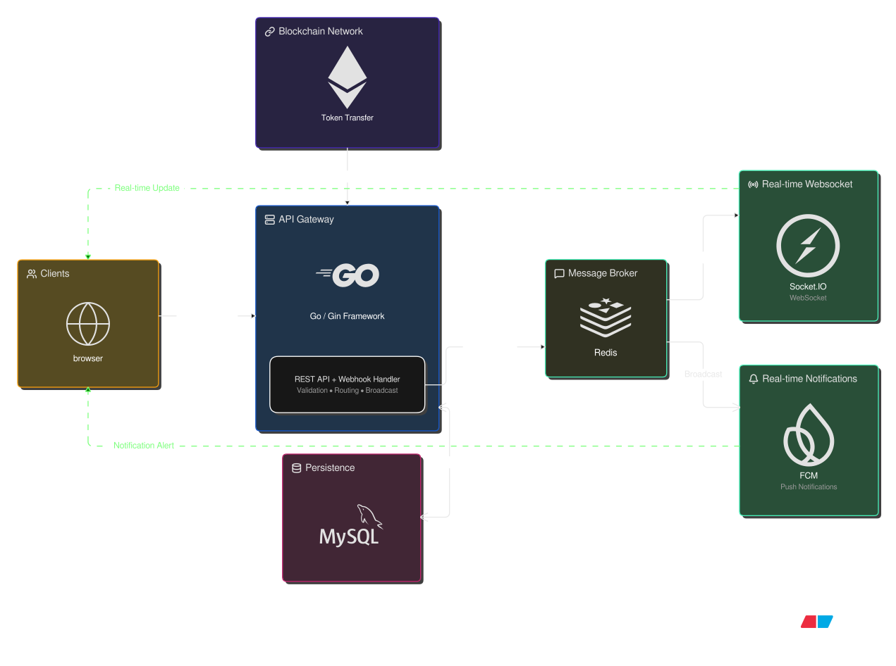
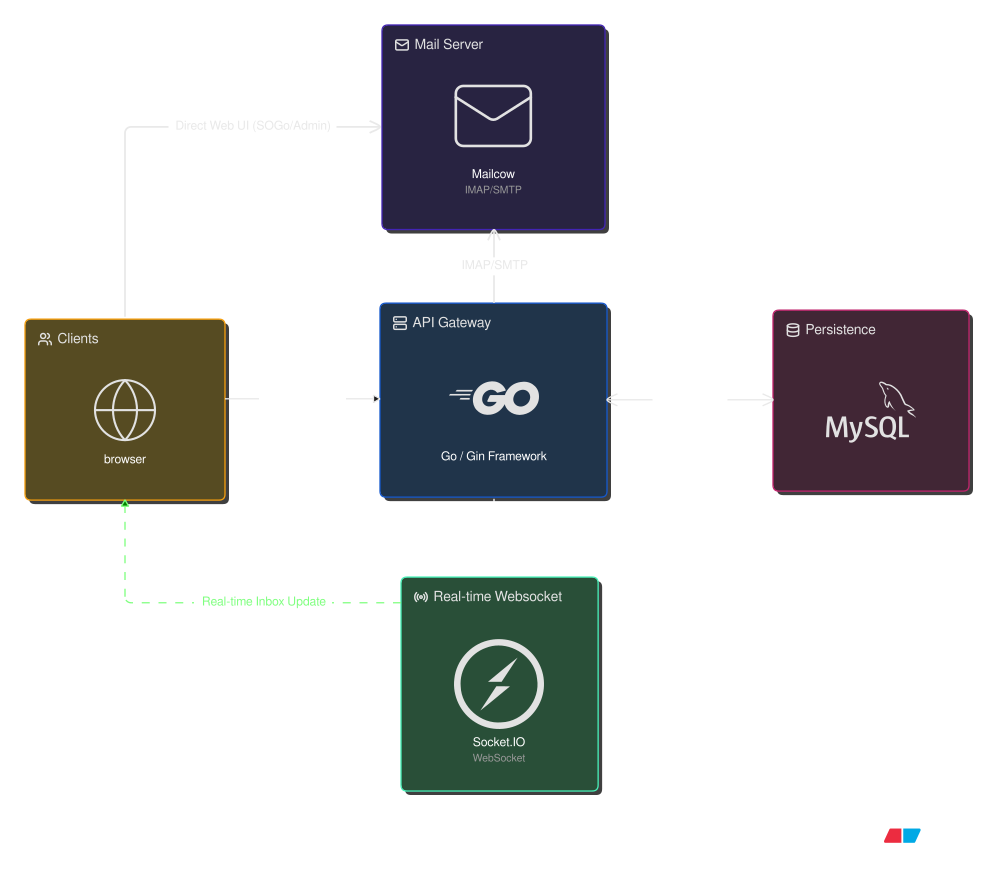

Remittance Backend System
Mengembangkan sistem backend remittance menggunakan framework Gin untuk memfasilitasi pengiriman token antar pengguna yang terdaftar. Mengintegrasikan webhook blockchain untuk mencatat setiap transaksi ke dalam database MySQL, serta mengimplementasikan Socket.IO dan FCM untuk notifikasi real-time.

Gambar 1: Arsitektur event-driven penanganan transaksi token.
(Klik gambar untuk melihat ukuran penuh)
Tantangan Teknis
- [*] Penanganan transaksi database berurutan dan aman
- [*] Integrasi webhook blockchain yang andal
- [*] Sinkronisasi notifikasi real-time secara presisi
Webmail Backend System
Membangun sistem backend webmail kustom dengan mengintegrasikan Mailcow sebagai engine utamanya. Mengembangkan API yang efisien menggunakan Go dan Gin untuk mengelola operasional email berbasis IMAP/SMTP, terintegrasi dengan MySQL dan Socket.IO untuk pemrosesan data real-time.

Gambar 2: Arsitektur integrasi API Go dengan engine Mailcow.
(Klik gambar untuk melihat ukuran penuh)
Tantangan Teknis
- [*] Manajemen operasional dan protokol IMAP/SMTP via kustom API
- [*] Sinkronisasi data real-time menggunakan Socket.IO
- [*] Optimalisasi query mailcow